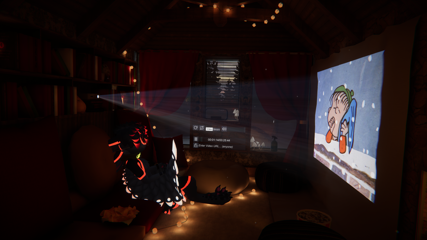
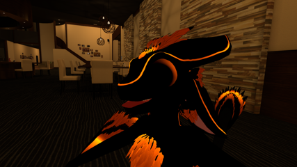

I'm a Furry
So what is a furry? Well on a surface level, a furry is someone who's intrested in anthropamorphic animals and usually has a character or fursona as it's called to represent them.
Some people even make up a backstory for thier character while others don't. My character is basically just an avatar for myself because while I had an idea for a story in my head
I haven't had the time or drive to write it.
What Do I Do in VR Chat?
Mainly hang out with various friends that I met. though sometimes I watch movies with people or play games in game worlds that people upload to VR Chat.
How long have I been using VR Chat?
About 2 years, I started back in Januaray of 2021 when I got my VR headset which is an Oculus (I refuse to call it a meta device) Quest 2. And it is what made me become a furry. In fact, here's one of the earliest pictures of me in VR Chat, from around the time I started wearing an Avali avatar.
